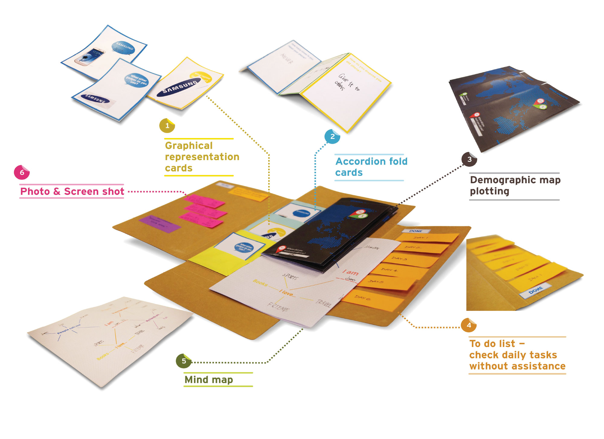
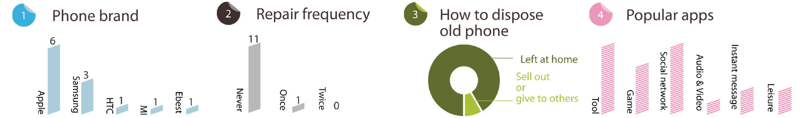
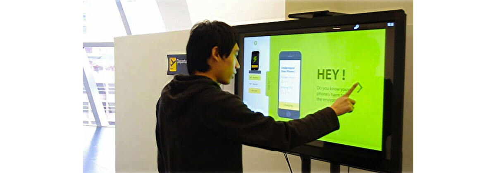

Some facts
Secondary Research Data
Only 1% of HK people recycle their old phone at recycling sites
Average HK citizen uses a cellphone for 21 months
Nearly 48% of HK people keep their old phone at home
Popular brands launch new generations of cellphones at high-pace resulting in huge amount of cellphone disposal. Hardware update is driven by rapid software updates, which compels users to increase consumption. Social environment and peer pressure may also stimulate impulsive electronic gadgets consumption. Moreover, complicated phone maintenance process induces users’ purchase behavior. Old phones are not properly discarded, which will cause tremendous environmental footprint. The reuse and recycling issue has become to be reckoned with in problems of our planet.

CULTURE PROBES
Research + Analysis


The target audiences of our project are tech savvy people who change cellphones and electronic gadgets frequently.Culture probes are tool kits that enable us to understand a person’s mindset, habbits and daily activities about interactions with his/her electronic devices. The participants were required to keep the probes for a week and finish activities. The analysis of the probes indicated that the public seldom shows intention to recycle used phones and other electronic gadgets for the sake of lacking recycling knowledge.
THE CONCEPT
It is an interactive panel installed in airports, MTR malls, and shopping centers. Qi Wireless charging station is built in the panel as an eye catcher, calling for less frequent electrical gadget and accessory consumption. Equipped with Pixel Sense technology, the panel is capable to identify the user’s cellphone type and presents appealing info-graphic of the environmental impacts caused by improper cellphone disposal accordingly, building up public awareness and concerns. Lastly, it provides detailed information about recycle channels and recycle methods.
User Interface
GET STARTED
Put your phone on the bracket and it will start charging automatically.Basic information of user’s cellphone will be displayed on the home page. Drop-down menu is located at left and you may share any content with your friend through facebook, twitter or email.

ENVIRONMENTAL IMPACTS
Shows the main material content of the user’s cellphone
Info-graphic for the disposal of certain content
RECYCLING SPOTS
Shows the nearest recycling spots and search function available to look for recycling spots at certain area; provides details about the spot you select and the traffic information; offers MTR discount for the trip
RECYCLING CHANNELS
Provides information of recycling programmes
Promotes eco organizations

NEW EVENTS
Provide up-to-date information of new events, exhibitions, activities, etc.
Promotion section and attracts sponsors
TRY THE INTERFACE
COMMERCIAL VIDEO
The concept is an interactive panel installed in the airport, MTR malls, and shopping centers. While you are waiting for the flight, or your cellphone is out of electricity, you can simply put the cellphone on the bracket for wireless charging.
When the phone is recharging, you may enjoy the information that we provide in the system. Start to know more about the environmental impact of cellphone disposal, you may click on any portion of the cellphone’s content, flip and view the info graphic.
Project Team: Michelle MA | Riddhi SHAH | Woody GENG
Advisor: Dr. Huaxin Wei, Assistant Professor, School of Design, HKPU
Exhibited at Masterpieces – Selected Master of Design student projects Dec 2013 – Jan 2014 Innovation Gallery, Jockey Club Innovation Tower
Exhibited at SD’s 50th Anniversary and the Grand Opening of Innovation Tower Mar 2014 Innovation Gallery, Jockey Club Innovation Tower
Project Archive: Poster